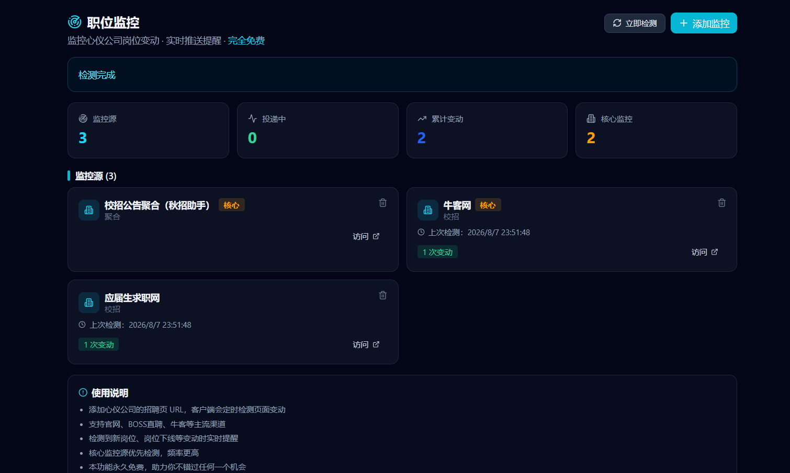

面向大学生与应届生
校园招聘AI助手：把网申、笔试、面试放进一条流程
QuizMate 将招聘信息、网申资料、笔试练习、面试准备和投递进度放在同一套求职流程中，减少信息分散和重复整理。

覆盖的校招环节
- 招聘公告与截止时间跟踪
- 网申资料和多份求职档案管理
- 笔试题型练习与错题复盘
- 面试问题准备与回答框架
- 投递状态和下一步行动记录
适合的招聘季
- 暑期实习与日常实习
- 秋招提前批与正式批
- 春招与补录
- 央国企、互联网、金融和制造业校招
一周执行模板
- 周一更新目标公司与截止时间
- 周二到周四完成网申和笔试练习
- 周五复盘投递状态和错题
- 周末准备下周面试与项目表达
如何开始
- 建立目标岗位和城市清单
- 导入或记录招聘来源
- 准备一份主简历和岗位版本
- 为每次笔试、面试设置复盘记录
常见问题
校园招聘AI助手和普通招聘软件有什么区别？
普通招聘软件侧重职位发布和沟通，QuizMate侧重求职者自己的信息整理、练习、准备和投递流程管理。
支持秋招和春招吗？
支持以清单和进度方式管理秋招、春招、实习、补录等不同批次。
能自动保证拿到 Offer 吗？
不能。工具可以减少重复工作并帮助准备，但结果仍取决于岗位匹配、个人能力、真实经历和招聘流程。
在哪里下载？
前往 QuizMate 官网下载页获取当前可用的客户端和浏览器插件。